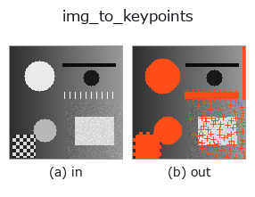

bridge op• Data kinds: image → keypoints
• Call: fullseye.apply(img, "img_to_keypoints", a=0.5, b=0.5) (2-D model = एक image + दो scalar knobs a,b∈[0,1])

*Figure synthetic 128×128 input पर सच में चलाकर मिला output है। बाईं ओर input, दाईं ओर output। Point clouds ऊपर से देखे गए scatter के रूप में (brightness = z), 1-D series line के रूप में, volumes z दिशा में maximum-intensity projection के रूप में, videos बीच के frame के रूप में, complex images amplitude के रूप में, और जो return values चित्र नहीं बन सकते वे स्वयं values के रूप में दिखाए जाते हैं।*
Knob a को बदलकर (0.1 / 0.5 / 0.9, दूसरा knob default पर):
▸ img_to_keypoints: knob a को बदलने का figure (docs site)
Knob b को बदलकर (0.1 / 0.5 / 0.9, दूसरा knob default पर):
▸ img_to_keypoints: knob b को बदलने का figure (docs site)
दूसरी images पर भी (synthetic scene / photo / coins। ऊपर की row में inputs, नीचे की row में उनके outputs। Knobs default पर):
▸ img_to_keypoints: दूसरी images पर output (docs site)
*चौथा column colour (H,W,3) input है। यह op channels को पार किए बिना colour संभालता है (colour channel को तीसरे spatial axis की तरह convolve नहीं करता)।*
image के local maxima को image plane के points (u, v) = (col, row) के (N,2) में बदलता है।
> नीचे का विस्तृत विवरण मूल text में है — सारांश और headings का अनुवाद हो चुका है।
scipy.ndimage.maximum_filter で窓内最大と一致し、かつ値がしきい値以上の画素を極大とする(同値の平坦部は全画素が極大になる —— 前段に gaussian を置くと減る)。
• a → 窓の一辺 k = 3 + 2 * int(a * 4)(a=0.5 で 7。大きいほど疎)。
• b → しきい値 thr = b(値 ≥ thr の極大だけ残す。b=0 で全極大)。
• 返り値: (N, 2) float64 の (u, v) = (col, row)。値の降順、同値は行優先で並ぶ(決定的)。極大が 1 つも無ければ (0, 2) —— 空でも形の契約は満たすが、下流の op によっては空を拒否する。
• 画像の縁は mode="nearest" で処理するので縁の画素も極大になりうる。
使いどころ: tb_keypoints_to_image2d(点を画像に戻す)、tb_keypoints_uv_to_points(z=0 の点群にする)への入口。
• gallery2d_bridge family guide
• Sample data catalog (DL URL / license) — 2-D के लिए skimage.data (BSD/public) + synthetic, 3-D के लिए real data sources (Stanford/PDS आदि) के DL URL।
• Operators का स्रोत और संदर्भ — इस op family के मूल research/methods के स्रोत।
• Algorithm का मानक स्रोत (लेखक, वर्ष) और उपयोग ऊपर की family usage guide में दिए गए हैं।
नीचे का program सच में चलता है, यह जाँचा गया है (figure वाला ही input)। Studio की help में यह block buttons बन जाता है, जिनसे इसे वहीं load करके चलाया जा सकता है।
img_to_keypoints 0.50 0.50
▸ यह pipeline load करें · Load करके चलाएँ
• gallery2d_bridge — py -3.11 examples/gallery2d_bridge.py
keypoints को input के रूप में लेते हैं)identity · tb_keypoints_uv_to_points · tb_keypoints_to_image2d
bridge)img_to_points · img_to_signal · img_to_projection_profile · img_to_counts · img_to_matrix · img_to_video · img_to_volume · img_to_lightfield
*Provenance: ops.py — 2D operator registry. यह per-op note tools/opdocs.py md से अपने-आप generate होता है (हाथ से edit न करें)।*
© 2026 Kazufumi Furuse — Fullseye operator documentation. Licensed under Apache-2.0.